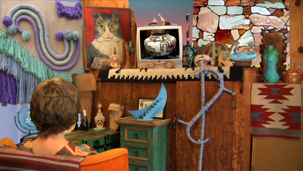
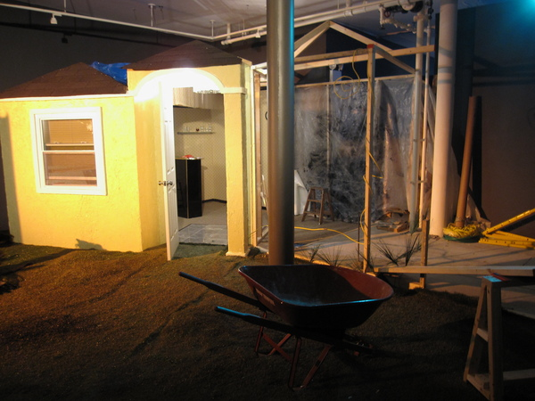
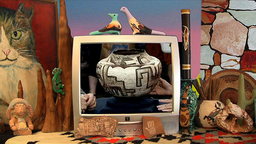
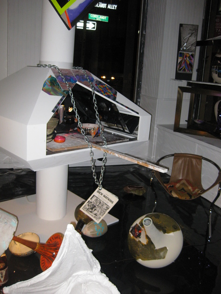

-
Erratic Anthropologies at Art in General
by Stephen Squibb November 12, 2009
When, some years from now, the current age finds itself the subject of satire or history, the pluralization of disciplines serving as titles will find itself marked for ridicule, comment or both. We are a people in love with a multiplicity of accountings, endlessly delighted by cartographies, geographies, mythologies, urbanisms, heterologies, eschatologies and the like. We are especially pleased when one of these fancy multiples is paired with a term or an idea that is initially counter-intuitive but ultimately poetic, evocative or otherwise pregnant with meaning. Two exemplary personal favorites in this pantheon include Cartographies of Desire, and Echographies of Television, though to this day I am still not certain I know what the second one signifies.
Why are these syntactical contortions so prevalent and so pleasurable? Perhaps the legacy of a certain postmodernism accounts for some of their plenitude. This strain fancied itself capable of laying out, side by side, any number of divergent, and at times even radically hostile, vocabularies. These competing cognitive maps could then be compared dispassionately, assessed not on the merits, but perhaps as moments of radical congruence – despite the inevitable performance of incommensurablity playing out in practice. The underlying appeal is the distinct intellectual pleasure in structure, compounded, in this country, by the simultaneous arrival (in 1966) of both structuralism and post-structuralism together; the fetish and its cure taken at the same time.
We can see the legacy of both moments at work in the title of the show currently at Art in General, Erratic Anthropologies. ‘Anthropologies,’ captures beautifully that distinct rush of mastery at work in the structuralist encounter, while ‘erratic’ carefully undoes that same authority in favor of the willed incapacity that marked not just post-structuralism, but all the posts, post-colonialism, post-feminism, and most other post–modernisms taken together.
As it turns out, anthropology is an altogether appropriate description of what’s taking place down on Walker street. Over the course of AIG’s two floors, artists Rancourt/Yatsuk, Shana Moulton and Guy Benfield deploy that discipline’s unique mixture of consideration and contempt on different aspects of contemporary society. Each work stands alone as an installation, but also has a performance element which ties in with Performa.
Rancourt/Yatsuk give us Phase IV, a sort of set-piece installation of a failing housing development in southwest Florida. At the performance last night, the developer, Don Donavucci burst from a paper covered container dressed like an Egyptian pharaoh to hawk the housing development to the crowd. Once inside the half-built house, patrons were encouraged to sign a piece of paper to get in on the development as soon as possible. Having been plied with cheap champagne and terrible, terrible live muzak, we were now offered further refreshments, namely water, whiskey and meatballs. This last combination was a particularly deft touch. It’s an impressive installation, most notably in the presence of a small, manufactured pond in the corner of the gallery behind a wall of fake plants. The pond is lit intermittently by a light linked to a sound installation that alternates between jungle cats mating and ‘the dying market calling out desperately the features and amenities that once made it great.’
Rancourt/Yatsuk don’t seem overly concerned with illuminating the underlying causes of the housing crash so much as they are content to lampoon in broad strokes the absurdity of the claims and personalities involved. This is perhaps less negative than it reads. Too often our pursuit of the conditions of possibility for this or that event moves us too quickly past certain, necessary judgments. No doubt there are deeply satisfying political and economic trends and far-reaching historical proclivities lurking behind the housing bust, but there was also the day-to-day greed, deceit, and general reprehensibility of developers like Don D. In this respect Rancourt/Yatsuk offer us a situation which is considerably less far from the truth then we would imagine, as many of the stunts and tactics utilized here are pulled directly from the playbook of south Florida real estate aspirants.
Shana Moulton’s contribution The Undiscovered Antique stages a sort of faux pilgrimage to the set of Antique Roadshow for the purpose of appraising an ambitious commodity. Cynthia, Moulton’s alter ego, hopes to uncover a valuable piece of Zuni pottery but ultimately finds herself in possession of a motorized footbath made by Avon. The entire aesthetic of the installation and performance is appropriately hideous; awful colors, vaguely menacing box-store massage tools and more terrible music give us a specific sense of the spectrum of consumption here under attack. Moulton’s use of projected video in performance is particularly accomplished, as she interacts quite seamlessly with the fabricated, two-dimensional landscape.
The engagement here is with that mixture of new-age spirituality, commodity fetishism and cosmetic, self-help culture that has become so prevalent in recent years. Cynthia herself is all surface, a placid sort of reactive consumerist everywoman, especially in the installed work. In performance this character is complicated somewhat by a sort of oblivious megalomania and a sudden and vicious assault at the hands of some unknown object, leading her to bleed pink.

Lastly there is Guy Benfield’s Night Store, installed in the first floor, store front gallery. Of the three installations, Benfield’s work appears as the least calculated and offers a decidedly messy counterpoint to the upstairs examinations. Haunted by the phrase ‘the trauma of pottery,’ Benfield has recreated a 1970s kiln and filled it with reflective materials, dance lighting, and a fog machine. At the performance, Benfield, dressed in a wig, moved bits of broken pottery in and out of the kiln while extremely loud house music and bits of voice-over were mixed by a DJ. Videos playing on loop depicted Benfield wrestling with different pots in what appears to be a ceramics workshop someplace.
Keeping with the theme, most everything in Night Store is ugly, but it’s a shiny, sparkly ugly in comparison with Moulton’s southwestern K-mart ugly and Rancourt/Yatsuk’s pre-fab crap-o-rama. What is nice about Benfield is that he doesn’t seem to hold his object at quite the distance the others do, allowing himself to inhabit more honestly the universe he is portraying. Ruminating on the ‘trauma of pottery,’ makes Night Store more personal and intriguing but also, correspondingly, less accessible and clear than the other work on display.
All three installations flirt with a smug, unthinking superiority, but each pulls back at key moments to avoid falling into rote denunciation. The plate of meatballs offered by Rancourt/Yatsuk and Guy Benfield’s decidedly compelling DJ accompanist both somehow disrupt the smooth narrative of objective distance. For Moulton’s part, Cynthia’s physical presence stands as a check against looking too far down at the lifestyle being examined. There is, finally, an impressive harmony between the three major elements of Erratic Anthropologies, as well as a refreshing lack of pretention, anthropological or otherwise.

{kind=link}
{kind=link}
{kind=link}
{kind=link}